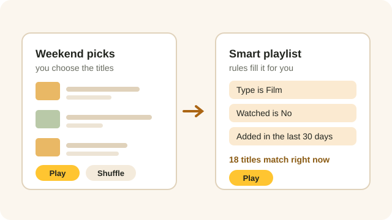

Line up a few films for the weekend, or set some rules once and let Beebo keep the list filled for you. Your playlists are on every screen.

WHERE THEY ARE
On your PC, Playlists is a tab down the side. On the phone and the TV it is in Library. In a browser it is in the menu. In the car, Beebo has a Playlists menu of its own.
You can make and change playlists on the PC, the phone, the TV and in a browser. In the car you can only play them, which is how it should be while you are driving.
STEP 1
Give it a name and choose New playlist. Then, from any poster, episode or show, use the ＋ Playlist button to drop it in.
Adding a whole show or a whole season adds its episodes in the order you would watch them.
Inside a playlist, small arrows move a title up or down a step, and a cross takes it out.
Play it with Play, mix it up with Shuffle, or pick up where you stopped with Resume. Resume remembers your own place, not anyone else’s.
STEP 2
A smart playlist has rules instead of a fixed list — “films, not watched, added in the last 30 days”. It works itself out fresh every time you open it, so it is never out of date.
While you are editing the rules, Beebo shows how many titles match right now and names a few, so you can see straight away whether you have it right.
There are six ready-made ones to start from: Unwatched movies added this month, 90s action, Short episodes under 30 minutes, Continue my shows, Movies in 4K, and My watchlist, not watched yet. Tap one and it is yours to adjust.
You can’t add a title to a smart playlist by hand, because its rules decide what is in it.
THE RULES
Films or episodes; a genre; a year, a range of years or a whole decade; a score out of 10; an age rating; 4K, HD or SD; how long it runs; an actor; a collection; a show; words in the title; whether you have watched it; and how recently it was added.
You can also pull in your watchlist, your favourites and what is next up in Continue Watching.
Every rule can be turned around into an “is not”. Say whether titles must match all of your rules or any of them, choose the order, and cap the list at a number if you like.
Genres, actors, collections and shows are typed in by name, so watch the live count underneath: if it says nothing matches, the spelling is usually the reason.
Beebo can only sort by what it knows about a title. Posters and details come from your TMDB key, so a title Beebo never matched has no genre, year or rating to test.
THE QUEUE
Not every evening needs a saved playlist. From any title, Play next puts it straight after what is on, and Add to queue puts it at the end.
The queue lasts as long as the app, or the browser tab, is open. Close it and the queue is gone — that is what saved playlists are for.
Near the end of a video, Beebo offers to go on to the next thing in the queue, or to stop after this one.
Yes. Nothing is saved but the rules, so the list is worked out again every time it is opened. A film you watched last night has already left an “unwatched” playlist.
Not yet. Playlists play films and episodes. Anything else in a playlist is shown but skipped.
It stays in the playlist marked “No longer in the library”, and is skipped when you play. Take it out whenever you like.
Up to 200 each, with up to 5,000 titles in one playlist.
Not at the moment. Use the up and down arrows to move a title one step at a time.
No, unless the owner of the Beebo computer shares one with the whole household.